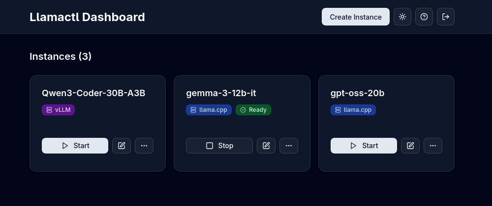
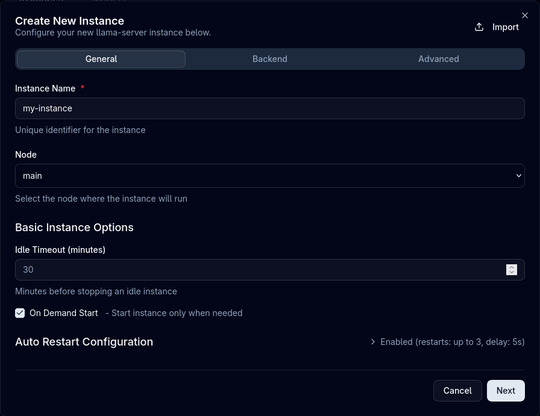

Managing Instances¶
Learn how to effectively manage your llama.cpp, MLX, and vLLM instances with Llamactl through both the Web UI and API.
Overview¶
Llamactl provides two ways to manage instances:
- Web UI: Accessible at
http://localhost:8080with an intuitive dashboard - REST API: Programmatic access for automation and integration

Authentication¶
Llamactl uses a Management API Key to authenticate requests to the management API (creating, starting, stopping instances). All curl examples below use <token> as a placeholder - replace this with your actual Management API Key.
By default, authentication is required. If you don't configure a management API key in your configuration file, llamactl will auto-generate one and print it to the terminal on startup. See the Configuration guide for details.
For Web UI access:
1. Navigate to the web UI
2. Enter your Management API Key
3. Bearer token is stored for the session
Theme Support¶
- Switch between light and dark themes
- Setting is remembered across sessions
Instance Cards¶
Each instance is displayed as a card showing:
- Instance name
- Health status badge (unknown, ready, error, failed)
- Action buttons (start, stop, edit, logs, delete)
Create Instance¶
Via Web UI

- Click the "Create Instance" button on the dashboard
- Optional: Click "Import" to load a previously exported configuration
Instance Settings:
- Enter a unique Instance Name (required)
- Select Node: Choose which node to deploy the instance to
- Configure Auto Restart settings:
- Enable automatic restart on failure
- Set max restarts and delay between attempts
- Configure basic instance options:
- Idle Timeout: Minutes before stopping idle instance
- On Demand Start: Start instance only when needed
Backend Configuration:
- Select Backend Type:
- Llama Server: For GGUF models using llama-server
- MLX LM: For MLX-optimized models (macOS only)
- vLLM: For distributed serving and high-throughput inference
- Optional: Click "Parse Command" to import settings from an existing backend command
- Configure Execution Context:
- Enable Docker: Run backend in Docker container
- Command Override: Custom path to backend executable
- Environment Variables: Custom environment variables
Auto-Assignment
Llamactl automatically assigns ports from the configured port range (default: 8000-9000) and generates API keys if authentication is enabled. You typically don't need to manually specify these values.
- Configure Basic Backend Options (varies by backend):
- llama.cpp: Model path, threads, context size, GPU layers, etc.
- MLX: Model identifier, temperature, max tokens, etc.
- vLLM: Model identifier, tensor parallel size, GPU memory utilization, etc.
- Optional: Expand Advanced Backend Options for additional settings
- Optional: Add Extra Args as key-value pairs for custom command-line arguments
- Click "Create" to save the instance
Via API
# Create llama.cpp instance with local model file
curl -X POST http://localhost:8080/api/v1/instances/my-llama-instance \
-H "Content-Type: application/json" \
-H "Authorization: Bearer <token>" \
-d '{
"backend_type": "llama_cpp",
"backend_options": {
"model": "/path/to/model.gguf",
"threads": 8,
"ctx_size": 4096,
"gpu_layers": 32,
"flash_attn": "on"
},
"auto_restart": true,
"max_restarts": 3,
"docker_enabled": false,
"command_override": "/opt/llama-server-dev",
"nodes": ["main"]
}'
# Create vLLM instance with environment variables
curl -X POST http://localhost:8080/api/v1/instances/my-vllm-instance \
-H "Content-Type: application/json" \
-H "Authorization: Bearer <token>" \
-d '{
"backend_type": "vllm",
"backend_options": {
"model": "microsoft/DialoGPT-medium",
"tensor_parallel_size": 2,
"gpu_memory_utilization": 0.9
},
"on_demand_start": true,
"environment": {
"CUDA_VISIBLE_DEVICES": "0,1"
},
"nodes": ["worker1", "worker2"]
}'
# Create MLX instance (macOS only)
curl -X POST http://localhost:8080/api/v1/instances/my-mlx-instance \
-H "Content-Type: application/json" \
-H "Authorization: Bearer <token>" \
-d '{
"backend_type": "mlx_lm",
"backend_options": {
"model": "mlx-community/Mistral-7B-Instruct-v0.3-4bit",
"temp": 0.7,
"max_tokens": 2048
},
"nodes": ["main"]
}'
Start Instance¶
Via Web UI
1. Click the "Start" button on an instance card
2. Watch the status change to "Unknown"
3. Monitor progress in the logs
4. Instance status changes to "Ready" when ready
Via API
curl -X POST http://localhost:8080/api/v1/instances/{name}/start \
-H "Authorization: Bearer <token>"
Stop Instance¶
Via Web UI
1. Click the "Stop" button on an instance card
2. Instance gracefully shuts down
Via API
curl -X POST http://localhost:8080/api/v1/instances/{name}/stop \
-H "Authorization: Bearer <token>"
Edit Instance¶
Via Web UI
1. Click the "Edit" button on an instance card
2. Modify settings in the configuration dialog
3. Changes require instance restart to take effect
4. Click "Update & Restart" to apply changes
Via API
Modify instance settings:
curl -X PUT http://localhost:8080/api/v1/instances/{name} \
-H "Content-Type: application/json" \
-H "Authorization: Bearer <token>" \
-d '{
"backend_options": {
"threads": 8,
"context_size": 4096
}
}'
Note
Configuration changes require restarting the instance to take effect.
Export Instance¶
Via Web UI
1. Click the "More actions" button (three dots) on an instance card
2. Click "Export" to download the instance configuration as a JSON file
View Logs¶
Via Web UI
- Click the "Logs" button on any instance card
- Real-time log viewer opens
Via API
Check instance status in real-time:
# Get instance logs
curl http://localhost:8080/api/v1/instances/{name}/logs \
-H "Authorization: Bearer <token>"
Delete Instance¶
Via Web UI
1. Click the "Delete" button on an instance card
2. Only stopped instances can be deleted
3. Confirm deletion in the dialog
Via API
Multi-Model llama.cpp Instances¶
llama.cpp Router Mode
llama.cpp instances support router mode, allowing a single instance to serve multiple models dynamically. Models are loaded on-demand from the llama.cpp cache without restarting the instance.
Creating a Multi-Model Instance¶
Via Web UI
- Click "Create Instance"
- Select Backend Type: "Llama Server"
- Leave Backend Options empty
{}or omit the model field - Create the instance
Via API
# Create instance without specifying a model (router mode)
curl -X POST http://localhost:8080/api/v1/instances/my-router \
-H "Content-Type: application/json" \
-H "Authorization: Bearer <token>" \
-d '{
"backend_type": "llama_cpp",
"backend_options": {},
"nodes": ["main"]
}'
Managing Models¶
Via Web UI
- Start the router mode instance
- Instance card displays a badge showing loaded/total models (e.g., "2/5 models")
- Click the "Models" button on the instance card
- Models dialog opens showing:
- All available models from llama.cpp instance
- Status indicator (loaded, loading, or unloaded)
- Load/Unload buttons for each model
- Click "Load" to load a model into memory
- Click "Unload" to free up memory
Via API
# List available models
curl http://localhost:8080/api/v1/llama-cpp/my-router/models \
-H "Authorization: Bearer <token>"
# Load a model
curl -X POST http://localhost:8080/api/v1/llama-cpp/my-router/models/Mistral-7B-Instruct-v0.3.Q4_K_M.gguf/load \
-H "Content-Type: application/json" \
-H "Authorization: Bearer <token>" \
-d '{"model": "Mistral-7B-Instruct-v0.3.Q4_K_M.gguf"}'
# Unload a model
curl -X POST http://localhost:8080/api/v1/llama-cpp/my-router/models/Mistral-7B-Instruct-v0.3.Q4_K_M.gguf/unload \
-H "Content-Type: application/json" \
-H "Authorization: Bearer <token>" \
-d '{"model": "Mistral-7B-Instruct-v0.3.Q4_K_M.gguf"}'
Using Multi-Model Instances¶
When making inference requests to a multi-model instance, specify the model using the format instance_name/model_name:
# OpenAI-compatible chat completion with specific model
curl -X POST http://localhost:8080/v1/chat/completions \
-H "Content-Type: application/json" \
-H "Authorization: Bearer <inference-key>" \
-d '{
"model": "my-router/Mistral-7B-Instruct-v0.3.Q4_K_M.gguf",
"messages": [
{"role": "user", "content": "Hello!"}
]
}'
# List all available models (includes multi-model instances)
curl http://localhost:8080/v1/models \
-H "Authorization: Bearer <inference-key>"
The response from /v1/models will include each model from multi-model instances as separate entries in the format instance_name/model_name.
Model Discovery¶
Models are automatically discovered from the llama.cpp cache directory. The default cache locations are:
- Linux/macOS:
~/.cache/llama.cpp/ - Windows:
%LOCALAPPDATA%\llama.cpp\
Place your GGUF model files in the cache directory, and they will appear in the models list when you start a router mode instance.
Instance Proxy¶
Llamactl proxies all requests to the underlying backend instances (llama-server, MLX, or vLLM).
# Proxy requests to the instance
curl http://localhost:8080/api/v1/instances/{name}/proxy/ \
-H "Authorization: Bearer <token>"
All backends provide OpenAI-compatible endpoints. Check the respective documentation:
- llama-server docs
- MLX-LM docs
- vLLM docs
Instance Health¶
Via Web UI
- The health status badge is displayed on each instance card
Via API
Check the health status of your instances: